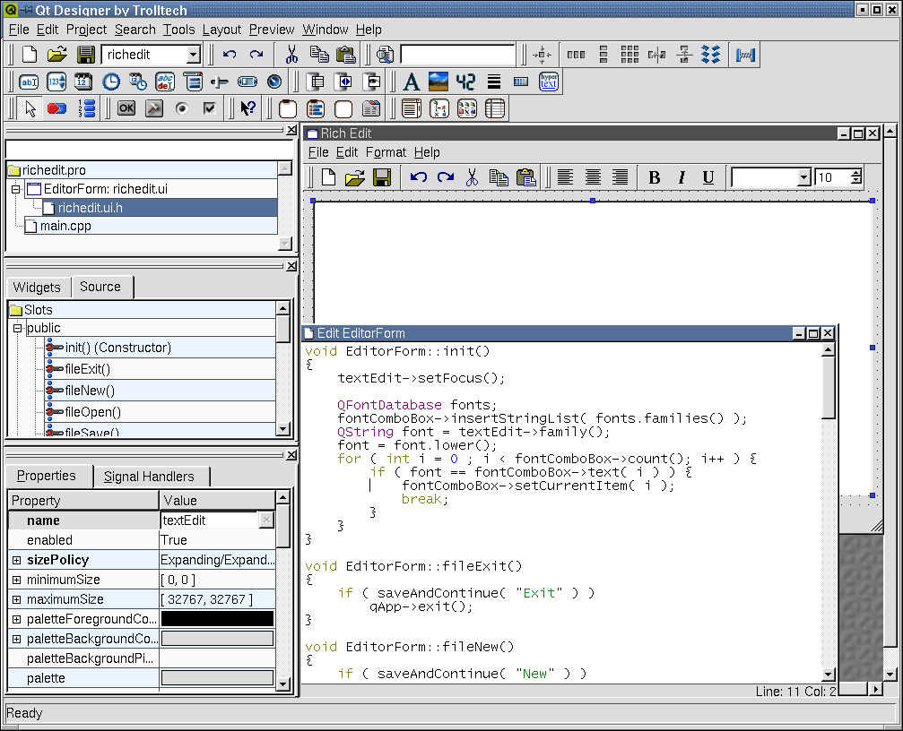

| 主页 | 所有的类 | 主要的类 | 注释的类 | 分组的类 | 函数 |
这本参考手册是有关于Qt设计器的，Qt设计器是用来设计和实现用户界面并能够在多平台下使用的一种工具。Qt设计器可以使用户界面设计实验变得简单。在任何时候你可以要求所生成的代码去重建Qt设计器产生的用户界面文件，并可以根据你的喜好来改变你的设计。假如你使用的是先前的版本，你将发现在新的版本下自己可以立即进入工作，因为新的版本在界面上基本没有什么变化。但是你将发现根据你们的反馈而开发出的新的部件和新的或者改进的功能。
Qt设计器帮助你使用部局工具在运行时自动的移动和缩放你的部件（Windows中的术语控件）来构建用户界面。最终界面是既好用又好看，使最终用户拥有一个舒适的操作环境并且能够方便的进行参数选择。Qt设计器支持信号和槽机制以使部件间能够进行有效的通信。Qt设计器包含一个代码编辑器，使你能够在合成的代码里面嵌入自己定制的槽。那些更喜欢使用手工方法分解合成代码的朋友也能够继续使用基类，因为从第一版的Qt设计器开始就把这些基类移植进去了。
这本手册通过讲述开发例程来向你介绍Qt设计器。一开始的六章是设计指南，而且各自间都尽可能设计成是独立的。接下来要介绍的是除了首章以外的每一章，并假定你已经熟悉了第一章的内容，该章包含使用Qt设计器创建一个Qt应用程序的基础。以下是便各章的简要概述：
第一章，创建一个Qt应用程序，通过带着你一步一步的创建一个小但功能完整的应用程序来介绍Qt设计器的使用。按照着这种方法你将学到如何创建一个窗体并且向窗体中添加部件。在你阅读这一章的过程中你将使用窗体和属性编辑器来定制你的应用程序，并且学习怎样使用部局工具来对一个窗体进行部局。你也将学到如何使用信号和槽机制和Qt设计器的内建代码编辑器来制造应用程序的各种功能。我们也将解释如何使用qmake来生成Makefile，以致于你能够编译和运行应用程序。
第二章，创建含有工具栏和菜单的主窗口，我们将创建一个简单的文本编辑器。通过写这个应用程序你将学到如何使用菜单栏和工具栏来创建一个主窗口。我们将看到如何使用Qt的内建功能来处理一般任务(e.g. 复制粘贴操作)还将看到如何为我们自己的菜单栏选项和工具栏按钮创建我们自己的功能。
第三章，走近设计器，提供有关Qt设计器的信息如相关的开发应用程序，并且还对Qt设计器背后的一些基本原理进行解释。
第四章，派生类和动态对话框， 将展示如何派生一个窗体；这将让你清楚的通过执行关键代码的功能来分解用户界面。本章中还附加有关qmake和 uic的信息。本章也将阐述如何使用QWidgetFactory把.ui文件放进你的应用程序从而动态的加载对话框和如何访问这些对话框的部件和派生部件。
第五章，创建自定义窗口部件，告诉你如何才能创建自定义部件。既有在第一版的Qt设计器中就被介绍的简单方法，又有像利用插件这种新的更有效的的方法都在这一章里被介绍了。
第六章， 创建数据库应用程序介绍了Qt的SQL类并且带着你通过一个实例来演示如何执行查询和如何设置主要关系的细节，深入讲解和处理外关键字。
第七章，定制和集成Qt设计器，聚焦Qt设计器本身，向你展示如何定制设计器，如何使用可视化工作室集成设计器和如何创建一个Makefiles。
这剩下的章节提供了一些参考资料，用以讲述Qt设计器的菜单选项、工具栏、快捷键以及对话框等的细节。
该手册假定你已经有了一些有关C++和Qt应用程序开发框架的基础。假如你需要学习C++或者Qt，这儿有大量的C++的书可供使用和少量的但是数量却在不断增长的有关Qt的书。你可以尝试一下大量伴随着Qt的联机文档和许多例程。
企业版的Qt包含了SQL模块。在创建数据库应用程序一章里我们演示了如何使用Qt设计器来编写SQL应用程序；这一章需要一些SQL和关系数据库的知识。
该版本的Qt设计器较其前一版本来说增加了更加多的功能。自己定制的槽功能代码可以直接在Qt设计器中编辑；操作工具栏、菜单栏就可以创建主窗口了；部局可以结合使用分解器；一些插件还允许你把大量的自定义部件进行打包并且在Qt设计器中可以使用他们。从对用户界面微小的改善到提高效率还有很多其它增强功能被结使在里面，例如在一个应用程序里的所有窗体可以有效的共享像素映射。
该版本的Qt设计器创建的工程文件使得开关在一个应用程序中的所有窗体变得十分简单，而且仍然保持了一个通常的数据库设置和映象。通过对派生类的全面支持，为直接在Qt设计器中编写代码带来了很多的益处，这些知识已经全面涵盖在走近设计器一章中了。
还介绍了一个新的库libqui，该库允许你在运行时从Qt设计器的.ui文件中自动加载对话框。这允计你提供给你的应用程序用户相当可观的自定义界面自由度，否则就需要使用C++了。
如果你仅仅想要一个简单而功能强大的单对话框可视设计工具，虽然新版本的Qt设计器介绍了新的进阶和技术但你可以忽略这些方面并且正确的使用与Qt 2.x相同的方法。

Qt设计器
如果你关于这个手册有一些注释、建议、批评或者适当的赞美，请访问doc@trolltech.com让我们知道。关于Qt或者Qt设计器的bug报告可以发送至Qt-bugs@trolltech.com。你也许也想要加入专门由开发者阅读和捐献的Qt-interest邮件列表；请访问http://www.trolltech.com以了解更多的细节。
| Copyright © 2002 Trolltech | Trademarks | 译者:hackerjun | Qt 3.0.5版
|